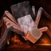

Minecraft Bedrock Edition için geliştirilen ve arşivlenen içerikler
Sürüm: 26.30Toplam Proje: 2

The Skitter - Bedrock Port
by MooshGF
Reddedilmiş Mod
Survive a giant procedural spider with advanced AI. Adds a massive procedural spider built from Block Displays that grows through 5 phases, adapts, mines walls, and relentlessly hunts players.
0 İndirme
Bedrock 26.300 Yorum
Horror
Bu Modu Zaten Yükledin!Detayları Gör →
Tempest Weather Mod
GELİŞTİRİLİYOR
Tempest Weather Modu yakında bu arşivde paylaşılacak. Güncellemeler ve geliştirme videoları için YouTube kanalını takip edebilirsiniz.
The Skitter - Bedrock Port
Reddedilmiş Mod
Geliştirici: MooshGF•Sürüm: 26.30•Horror
Bu Modu Zaten Yükledin!
Bedrock Port
Survive a giant procedural spider with advanced AI.
The Skitter adds a massive procedural spider that grows, adapts, and relentlessly hunts players across your world. It isn't just another boss—it behaves like a persistent predator with advanced movement, hunting, and survival mechanics.
Features
Procedural Creature
The Creature is built entirely from procedural Block Displays instead of a traditional entity model.
Features include:
Fully procedural FABRIK IK legs
Speed-matched walking and galloping animations
Spring-based body movement
Dynamic terrain tilt
Growth System
The Creature evolves through 5 growth phases.
Starts at roughly 3 blocks tall
Reaches over 11 blocks in the final phase
Grows by hunting mobs
Each phase increases:
Health
Damage
Detection range
Attack reach
Movement speed
• Health scales from 60 HP to 230 HP.
• Detection radius increases from 30 to 115 blocks.
Hunting AI
Players are always the highest priority target.
Behavior includes:
Remembers players that attacked it
Hunts nearby hostile and passive mobs
Requires line of sight before attacking
Mob attacks:
Captures prey with web
Pulls victims toward itself
Eats them to continue growing
Player attacks:
Heavy melee attacks with knockback
30% chance to grab players in its jaws
Escape by landing 3 successful hits
45% chance to inflict Poison for 3–5 seconds
Shields block all attacks until Phase 5, where powerful strikes can break through defensive positioning.
Siege Abilities
Unlocked from Phase 3 onward.
Abilities include:
Mines through walls, floors, and ceilings
Player-like mining animations
Cannot mine obsidian
Power Jump:
Crouch wind-up
Camera shake
Ground impact
Optional block destruction during flight
Anti-tower behavior:
Jumps at nearby players
Pulls distant players down using webs
Sneaking does not prevent web pulls
Adaptive Behavior
The Creature is designed to feel unpredictable.
Examples include:
Freezes when first spotted
Slowly stalks its target
Performs false charges
Searches the player's last known position
Uses sound cues while tracking
Occasionally retreats before attacking again
Stores grudges against players
Ambient sculk-like clicking sounds
Feeding roars
Escape Mechanic
At 10% health, the Creature attempts to survive.
It will:
Sprint away
Burrow underground
Disappear temporarily
Return roughly 30 seconds later at full health
Final Phase death causes:
Cobweb explosion
3–5 venomous spiderlings
Spiderlings can climb walls
Commands
Available commands (kopyalamak için tıklayın):
Multiplayer
Spider Hunt supports multiplayer worlds.
The Creature behaves consistently across players while remembering targets and continuing its hunt.
Selam Ben MooshGF! Tempest Weather Modu üzerinde çalışmalarım devam ediyor, çok yakında bu sayfadan indirilebilir olacak. Duyurular için YouTube kanalımı takip edebilirsiniz.
Yorumlar 0
Yorumlar kalıcı olarak kaydedilir